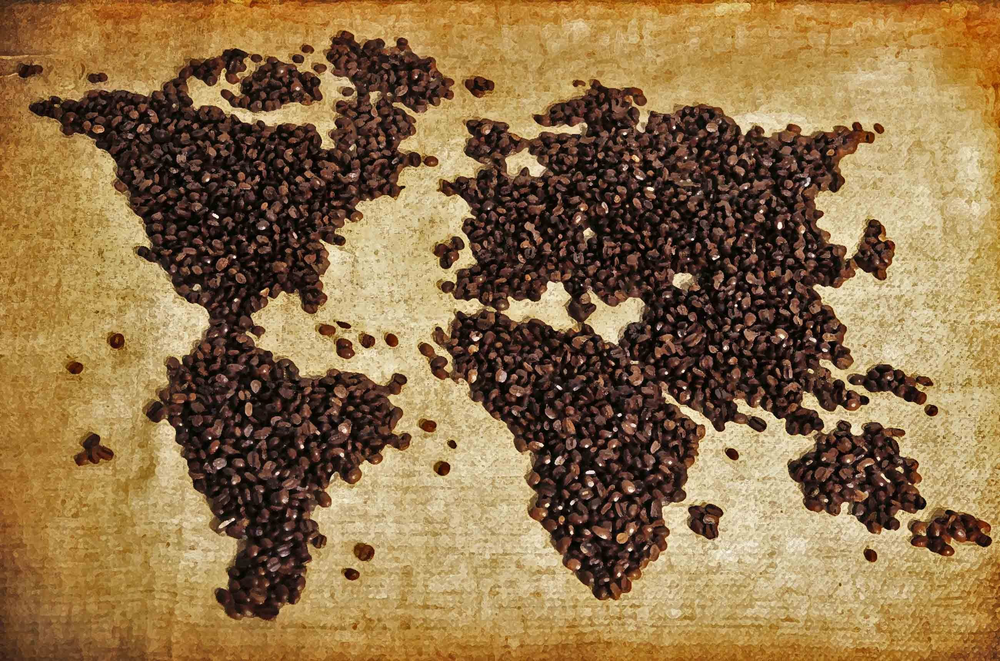

History of Coffee
No one knows exactly how or when coffee was discovered, but there are a few different theories.
An Ethiopian Lengend
There, legend says the goat herder Kaldi first discovered the potential of these beloved beans. The story goes that that Kaldi discovered coffee after he noticed that after eating the berries from a certain tree, his goats became so energetic that they did not want to sleep at night. Kaldi reported his findings to the abbot of the local monastery, who made a drink with the berries and found that it kept him alert through the long hours of evening prayer.
The Arabian Penisula
By the 15th century, coffee was being grown in the Yemeni district of Arabia and by the 16th century it was known in Persia, Egypt, Syria, and Turkey.Coffee was not only enjoyed in homes, but also in the many public coffee houses — called qahveh khaneh — which began to appear in cities across the Near East. The popularity of the coffee houses was unequaled and people frequented them for all kinds of social activity.Coffee houses quickly became such an important center for the exchange of information that they were often referred to as “Schools of the Wise.”
Reaching North America
In the mid-1600's, coffee was brought to New Amsterdam, later called New York by the British. Though coffee houses rapidly began to appear, tea continued to be the favored drink in the New World until 1773, when the colonists revolted against a heavy tax on tea imposed by King George III. The revolt, known as the Boston Tea Party, would forever change the American drinking preference to coffee. "Coffee - the favorite drink of the civilized world." - Thomas Jefferson